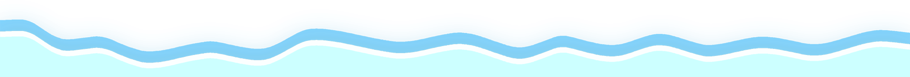
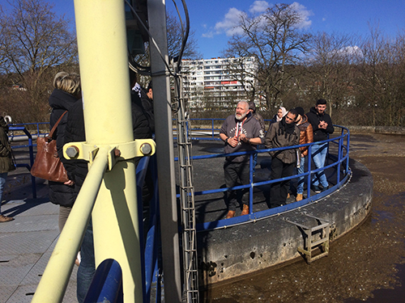
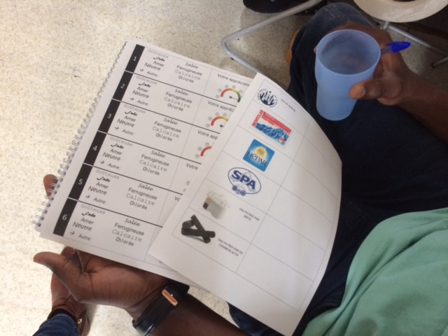

Les activitées proposées par Aqualis
Par des ateliers d'échange et des visites, vous apprendrez des astuces pour un usage rationnel de l'eau à la maison et
des trucs pour diminuer la consommation des radiateurs ou des appareils électriques.
Nos animations
Elles s'adressent principalement aux demandeurs d'asile ainsi qu'aux stagiaires FLE de l'asbl Le Monde des Possibles .
Le projet Aqualis propose des séances pratiques de formation à un usage respectueux de la nature et financièrement soutenable par rapport aux futures ressources des familles demandeuses d'asile, lorsqu'elles sortiront du Centre d'hébergement. Il s’agit d’améliorer significativement les conditions de vie des réfugiés en les sensibilisant aux questions de précarité hydrique et de coût des énergies.
Parmis les services offerts par ce programme,
vous trouverez aussi : un prêt d'outils pour de petites réparations ainsi qu'un service social.
Voici quelques liens utiles pour faire des ECONOMIES :
Un comparateur de fournisseurs de GAZ et ELECTRICITE
Le site de la Commission Wallonne pour l'Energie qui offrent des informations sur le sujet
Le site de TEST-ACHAT pour comprendre de quoi est composé sa consommation actuelle
Nos précédents ateliers
Initiation à la plomberie : détection et réparation de fuites d’eau (robinet et chasse d’eau) avec l’ASBL « Les Débrouillardes »
Atelier thématique sur l'environnement avec l’ASBL « Empreintes »
Conférence sur la consommation responsable avec l’ASBL « ECOCONSO »
Visite d'une station d'épuration : la station des Grosses Battes à Liège.

Les témoignages
De part leurs implications dans les ateliers, les visites guidées ou la participation aux conférences les apprenants ont pu mieux contrôler leur consommation d'énergie. Voici un témoignage en VIDEO :
Aqualis en images
Nos stagiaires dans leurs infrastructures :


